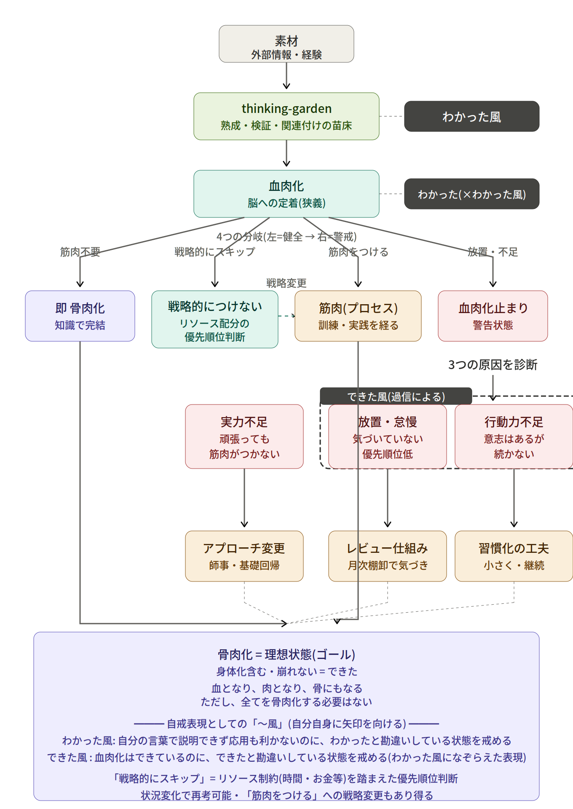

⚠️ よくある誤解（外で語る前に）
10,000時間・学習スタイル・手書き優位・21日習慣化 などの俗説を最新研究で補正
「思考学習」を学習科学・認知科学の一般的な枠組みで俯瞰し、各テーマを科学的根拠（研究）で裏付ける。領域カードをクリックして深掘りする。
バラバラの17トピックでなく、互いに支え合う一つの系として見る。メタ認知がハブで、想起練習×分散効果が記憶の核、流暢性の錯覚（スラスラ＝わかった の誤認）をどう破るかが学習の質を決める。
広く流布しているが、最新研究・メタ分析・追試では支持されない（または大きく弱まった）主張。フェーズB（2026-06-18）で裏取りした。
意図的練習研究の誤った一般化。実際は：Macnamara 2014 メタ分析（11,135人）で練習の説明力は領域依存（ゲーム26%・音楽21%・教育4%・職業<1%）。Ericsson 1993 の効果量も追試で半減（η²0.48→0.26）。Ericsson 本人が俗説化を否定している。
教育界で根強いが実証されていない神話。実際は：スタイルを合わせても成績は上がらない（効果量 d≈0.04）。提示方法は学習者でなく内容に適合させるべき。Pashler et al. 2008
Mueller & Oppenheimer (2014) が有名だが、近年の大規模追試で効果は小さく再現性に議論（Morehead et al. 2019、d≈0.14）。実際は：手段より「自分の言葉で再構成しているか（＝産出・自己説明）」が効く。
出典は整形外科医 Maxwell Maltz（1950年代）の臨床観察で科学的根拠なし。実際は：Lally et al. (2010) で自動化まで中央値66日、行動の難易度により18〜254日と大きく幅がある。
ドーパミンは「快楽物質」ではなく報酬予測誤差の信号。実際は：ドーパミンは枯渇しない。休息・習慣変更が効くのは、報酬予測の振幅（基準値の上昇＝相対的退屈化）を再調整するため。「毒抜き」ではなく学習の再調整。
debiasing は困難。実際は：警告・知識・訓練だけではバイアスは消えず、訓練文脈の外では自動的に再発現する（転移しない）。個人努力より、意思決定プロセスの構造化・複数評価者・チェックリストといった仕組みで補うのが現実的。
ここから先は整理（一般用語）とは別レイヤー。上の学習科学を自分のものにする（血肉化する）ときに Tak が使う個人フレーム。整理のロジックには持ち込まず、参考として置く。

思考資産フレームワーク v7（個人レイヤー・整理軸には使わない）